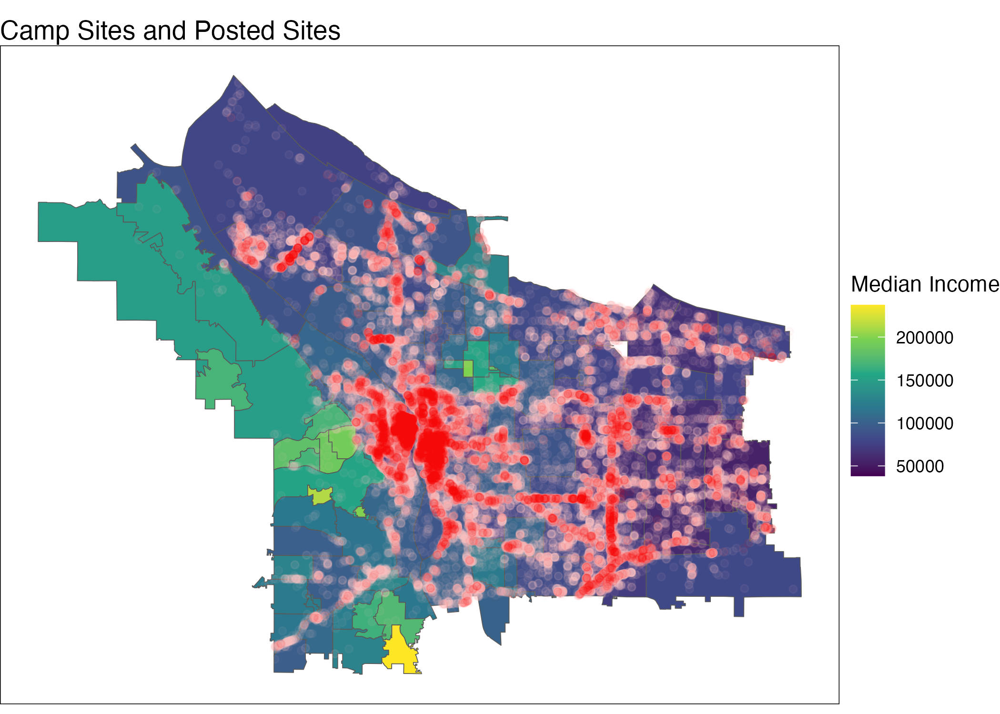
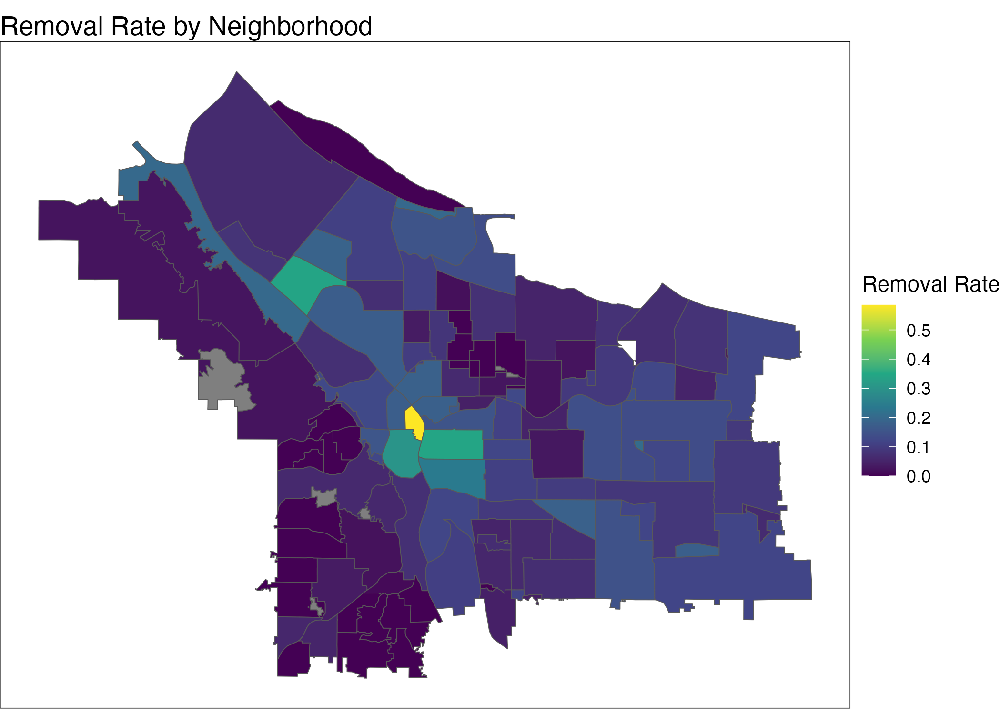

Making Hostility Spatial: Mapping The Forced Displacement of Campsites in Portland
Project 2
Abstract
This project investigates how hostility towards unhoused people camping in the city of Portland functions spatially by asking: where are people most vulnerable to forced displacement? Through a series of maps which display reported campsites and sites posted for removal from the beginning of 2023 to April 2024 along with a series of explanatory variables, this question is given a more tangible shape. I ultimately argue that commercial districts are most hostile to unhoused people as the reports of illegal camping, and the sites that are posted for removal are largely concentrated in the parts of the city that are zoned for commercial use.
Introduction
What is especially troubling about Portland is the perceived difference between “van life” and “life in a van.” Streets parked up with $80,000 Mercedes sprinter vans owned by Intel executives are what we are all supposed to strive for, while victims of skyrocketing rent prices and addiction whose last option is a worn-down camper van are swept by city officials every other week. My undergraduate thesis considered the extent to which certain forms of free transiency and “living off the grid” are perceived as threatening to society. This project builds on my historical analysis by investigating how contemporary hostility towards unhoused people living in Portland functions spatially. I.e.: where are people most vulnerable to forced displacement?
The Data
The Impact Reduction Program (IRP) publicly supplies information from their One Point of Contact Campsite Reporting System which provides some transparency around the experience of unhoused people in the city. The data I am working with contains two parts. The first are the “Campsite Reports” which are all the cataloged reports of illegal camping filed by residents since the beginning of 2023 (over 130,000 points). Each row of the data set reflects one report of one campsite. Upon reception of these reports, the IRP investigates the sites to determine if they meet the criteria for forced displacement. If the IRP deems the sites “threatening” then the campsite is posted for removal and is added as a data point to the “Post Sites” layer. My goal here, is to investigate potential explanatory variables that might account for the higher rates of reports, and removals in certain parts of the city.
To investigate this question I turn to both median income by neighborhood and zoning as possible explanations. The data on median income comes from the census data block groups which I combined and average based on the total population within each in order to get the median income by neighborhood. The hope is to get a sense if there are any types of neighborhoods that are more hostile towards unhoused neighbors. Since ultimately, there was no clear relationship between the two, I turned towards commercial districts as another possible explanation. The zoning data originates from the City of Portland Bureau of Planning and Sustainability. It was filtered to retain only the geometry for all commercial, industrial, non-residential districts. In mapping allocated commercial districts with the campsite reports, a clearer picture of their relationship is visible.
The Maps
By incorporating spatial data on median income and zoning, and overlaying it with the spatial distribution of reported and posted campsites, there is an opportunity to visually observe what the relationships between these variables might be. This first map displays the median income by neighborhood with the reported and posted sites. Based on this map it appears that higher income neighborhoods have lower levels of reported and posted campsites. Specifically the Alberta/Concordia region in Northeast shows up as a high-income pocket with fewer disturbed sites, similarly the west side has very few sites.

A similar story comes to the forefront of the narrative when I calculated the removal rate of each neighborhood. The lowest income neighborhood, Old Town, has a removal rate of 50%. Contrarily, the same Alberta/Concordia neighborhoods in Northeast have a removal rate of close to zero. Similarly, many of the high-income neighborhoods on the west side have a removal rate close to zero.
However, median income alone does not encapsulate the entire narrative. The parts of the city that are zoned for commercial use also tend to be in lower income neighborhoods. While places such as Alberta, Concordia, and the westside are much more likely to be exclusively residential.
This map displays the parts of the city that are zoned for commercial use, along with all of the reports of illegal camping. Visually, it is clear that campsites which are in, or close to commercial districts are often reported to the IRP. The points are often concentrated along commercial roadways including Powell Blvd and Foster Rd in Southeast. Downtown Portland also reflects the largest cluster of points. The parts of the city that have very few reports of illegal camping are also those that have very few commercial districts: i.e. Alberta, Concordia and the westside.
This map displays the parts of the city that are zoned for commercial use, along with all of the campsites that were posted for removal by the IRP. Here, the relationship between campsites that are disturbed and their proximity to commercial districts is even more explicit. Posted sites are mostly along commercial roadways and in downtown areas.
To make this relationship even clearer, I calculated some summary statistics. The average distance from reported sites and the nearest commercial district was 37.1 meters, while the average distance between sites posted for removal and the nearest commercial district was 16.25 meters. Thus, campsites that were actually targeted for displacement by the city were closer on average to commercial areas. A similar story emerges when we look at the proportion of campsites that are located within commercial zones in both data sets. 81.4% of reported campsites were located in commercial zones, while 88.6% of campsites posted for removal were inside commercial areas. Again, sites targeted for removal were more likely to be in commercial districts. These statistics reinforce the visual story that began to emerge in the maps. Not only are reports of campsites concentrated in and around commercial zones, but the displacement of campsites as conducted by the IRP seem to prioritize commercial areas.
Discussion
The higher rates of hostility from businesses towards campsites is not necessarily surprising. In the article “The Corporate Campaign against Homelessness: Class Power and Urban Governance in Neoliberal Atlanta, 1973-1988,” Charles Steffen argues that the neoliberal project of capitalist revitalization that emerged in the 1970’s, was dependent on businesses reconstruction of urban government’s policies towards unhoused people. He writes, the “skyrocketing number of unhoused people on city streets represented a highly visible threat to the corporate sector’s agenda.”(Steffen 2012, 171) Thus, it was in the interest of buissnesses to produce pathologized systems of removal in order to create the imagined, idealized central economic districts. His investigation of Atlanta, is just one study of a broader trend that was happening across the US, and, that he argues, was fundamental to shaping modern urban governance. Other scholars too, have motioned to businesses’ motivations for taking up more aggressive politics of displacement for fear of losing profits. My project certainly proposes that hostility towards unhoused people in urban spaces continues to originate from commercial districts to this day. The reports of illegal camping filed by residents are most often in, or close to commercial areas. Similarly, the sites that get posted for removal by systems of urban governance are even more likely to be commercial areas. Thus, the citywide effort to “preserve” the idealized shopping districts certainly produces limited geographies for unhoused people as they attempt to navigate hardship.